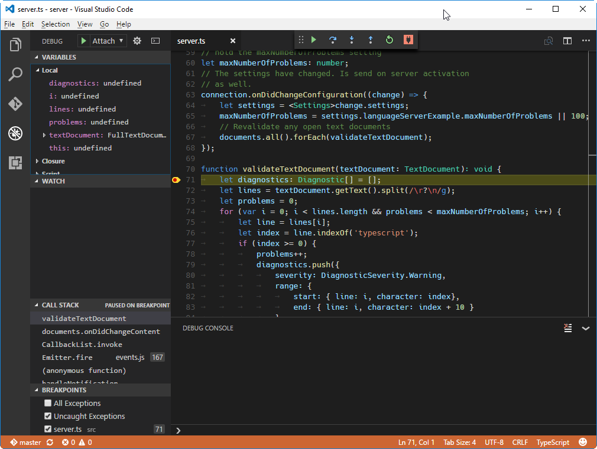

Example - Language Server
Language servers allow you to add your own validation logic to files open in VS Code. Typically you just validate programming languages. However validating other file types is useful as well. A language server could, for example, check files for inappropriate language.
In general, validating a programming language can be expensive. Especially when validation requires parsing multiple files and building up abstract syntax trees. To avoid that performance cost, language servers in VS Code are executed in a separate process. This architecture also makes it possible that language servers can be written in other languages besides TypeScript/JavaScript and that they can support expensive additional language features like code completion or Find All References.
The remaining document assumes that you are familiar with normal extension development for VS Code.
Implement your own Language Server
Language servers can be implemented in any language and follow the Language Server Protocol. However, right now VS Code only provides libraries for Node.js. Additional libraries will follow in the future. A good starting point for a language server implementation in Node.js is the example repository Language Server Node Example.
Clone the repository and then do:
|
The above installs all dependencies and opens two VS Code instances: one for the server code and one for the client code.
Explaining the ‘Client’
The client is actually a normal VS Code extension. It contains a package.json file in the root of the workspace folder. There are three interesting sections of that file.
First look the activationEvents:
|
This section tells VS Code to activate the extension as soon as a plain text file is opened (e.g. a file with the extension .txt).
Next look at the configuration section:
|
This section contributes configuration settings to VS Code. The example will explain how these settings are sent over to the language server on startup and on every change of the settings.
The last part adds a dependency to the vscode-languageclient library:
|
As mentioned, the client is implemented as a normal VS Code extension.
Below is the content of the corresponding extension.ts file:
|
Explaining the ‘Server’
Note: The ‘Server’ implementation cloned from the GitHub repository has the final walkthrough implementation. To follow the walkthrough, you can create a new
server.tsor modify the contents of the cloned version.
In the example, the server is also implemented in TypeScript and executed using Node.js. Since VS Code already ships with a Node.js runtime, there is no need to provide your own, unless you have very specific requirements for the runtime.
The interesting section in the server’s package.json file is:
|
This pulls in the vscode-languageserver library.
Below is a server implementation that uses the provided simple text document manager which synchronizes text documents by always sending the file’s full content from VS Code to the server.
|
Adding a Simple Validation
To add document validation to the server, we add a listener to the text document manager that gets called whenever the content of a text document changes. It is then up to the server to decide when the best time is to validate a document. In the example implementation, the server validates the plain text document and flags all occurrences of typescript with a message to spell it TypeScript. The corresponding code snippet looks like this:
|
Diagnostics Tips and Tricks!
- If the start and end positions are the same, VS Code will squiggle the word at that position.
- If you want to squiggle until the end of the line, then set the character of the end position to Number.MAX_VALUE.
To test the language server do the following:
- Go to the VS Code instance containing the server code (see above) and press ⇧⌘B (Windows, Linux Ctrl+Shift+B) to start the build task. The task compiles the server code and installs (e.g. copies) it into the extension folder.
- Now go back to the VS Code instance with the extension (client) and press F5 to launch an additional
Extension Development Hostinstance of VS Code that executes the extension code. - Create a test.txt file in the root folder and paste the following content:
|
The Extension Development Host instance will then look like this:
Debugging both Client and Server
Debugging the client code is as easy as debugging a normal extension. Set a breakpoint in the VS Code instance that contains the client code and debug the extension by pressing F5. For a detailed description about launching and debugging an extension see Running and Debugging Your Extension.
Since the server is started by the LanguageClient running in the extension (client), we need to attach a debugger to the running server. To do so, switch to the VS Code instance containing the server code and press F5. This will attach the debugger to the server. Use the normal Debug View to interact with the running server.

Using Configuration Settings in the Server
When writing the client part of the extension, we already defined a setting to control the maximum numbers of problems reported. We also instructed the LanguageClient to sync these settings to the server using the synchronization configuration in the LanguageClientOptions:
|
The only thing we need to do now is to listen to configuration changes on the server side and if a settings changes, revalidate the open text documents. To be able to reuse the validate logic of the document change event handling, we extract the code into a validateTextDocument function and modify the code to honor a maxNumberOfProblems variable:
|
The handling of the configuration change is done by adding a notification handler for configuration changes to the connection. The corresponding code looks like this:
|
Starting the client again and changing the setting to maximum report 1 problem results in the following validation:

Adding additional Language Features
The first interesting feature a language server usually implements is validation of documents. In that sense, even a linter counts as a language server and in VS Code linters are usually implemented as language servers (see eslint and jshint for examples). But there is more to language servers. They can provide code complete, Find All References or Go To Definition. The example code below adds code completion to the server. It proposes the two words ‘TypeScript’ and ‘JavaScript’.
|
The data fields is used to uniquely identify a completion item in the resolve handler. The data property is transparent for the protocol. Since the underlying message passing protocol is JSON based, the data field should only hold data that is serializable to and from JSON.
All that is missing is to tell VS Code that the server support code completion requests. To do so, flag the corresponding capability in the initialize handler:
|
The screen shot below shows the completed code running on a plain text file:

Additional Language Server features
The following language features are currently supported in a language server along with code completions:
- Document Highlights: highlights all ‘equal’ symbols in a text document.
- Hover: provides hover information for a symbol selected in a text document.
- Signature Help: provides signature help for a symbol selected in a text document.
- Goto Definition: provides go to definition support for a symbol selected in a text document.
- Find References: finds all project-wide references for a symbol selected in a text document.
- List Document Symbols: lists all symbols defined in a text document.
- List Workspace Symbols: lists all project-wide symbols.
- Code Actions: compute commands for a given text document and range.
- CodeLens: compute CodeLens statistics for a given text document.
- Document Formatting: this includes formatting of whole documents, document ranges and formatting on type.
- Rename: project-wide rename of a symbol.
- Document Links: compute and resolve links inside a document.
The Language Extension Guidelines topic describes each of the language features above and provides guidance on how to implement them either through the language server protocol or by using the extensibility API directly from your extension.
Incremental Text Document Synchronization
The example uses the simple text document manager provided by the vscode-languageserver module to synchronize documents between VS Code and the language server.
This has two drawbacks:
- Lots of data transfer since the whole content of a text document is sent to the server repeatedly.
- If an existing language library is used, such libraries usually support incremental document updates to avoid unnecessary parsing and abstract syntax tree creation.
The protocol therefore supports incremental document synchronization as well.
To make use of incremental document synchronization, a server needs to install three notification handlers:
- onDidOpenTextDocument: is called when a text document is opened in VS Code.
- onDidChangeTextDocument: is called when the content of a text document changes in VS Code.
- onDidCloseTextDocument: is called when a text document is closed in VS Code.
Below a code snippet that illustrates how to hook these notification handlers on a connection and how to return the right capability on initialize:
|
Next Steps
To learn more about VS Code extensibility model, try these topic:
- vscode API Reference - Learn about deep language integration with VS Code language services.
- Language Extension Guideline - A guide to implementing VS Code’s rich language features.
- Additional Extension Examples - Take a look at our list of example extension projects.
Common Questions
Q: When I try to attach to the server, I get “cannot connect to runtime process (timeout after 5000ms)”?
A: You will see this timeout error if the server isn’t running when you try to attach the debugger. The client starts the language server so make sure you have started the client in order to have a running server. You may also need to disable your client breakpoints if they are interfering with starting the server.